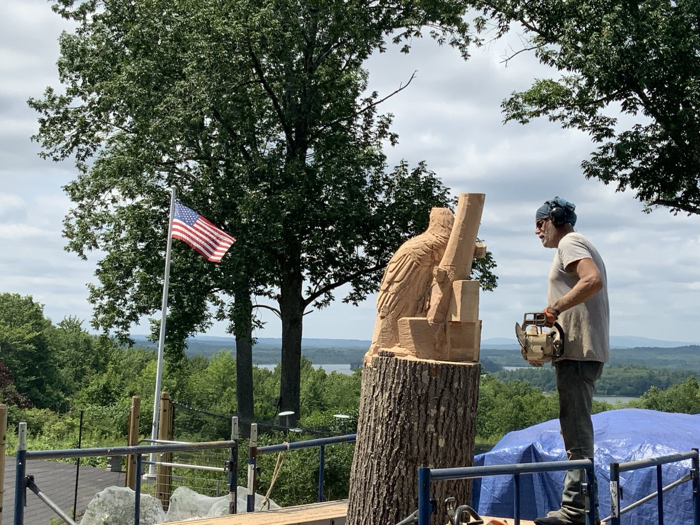
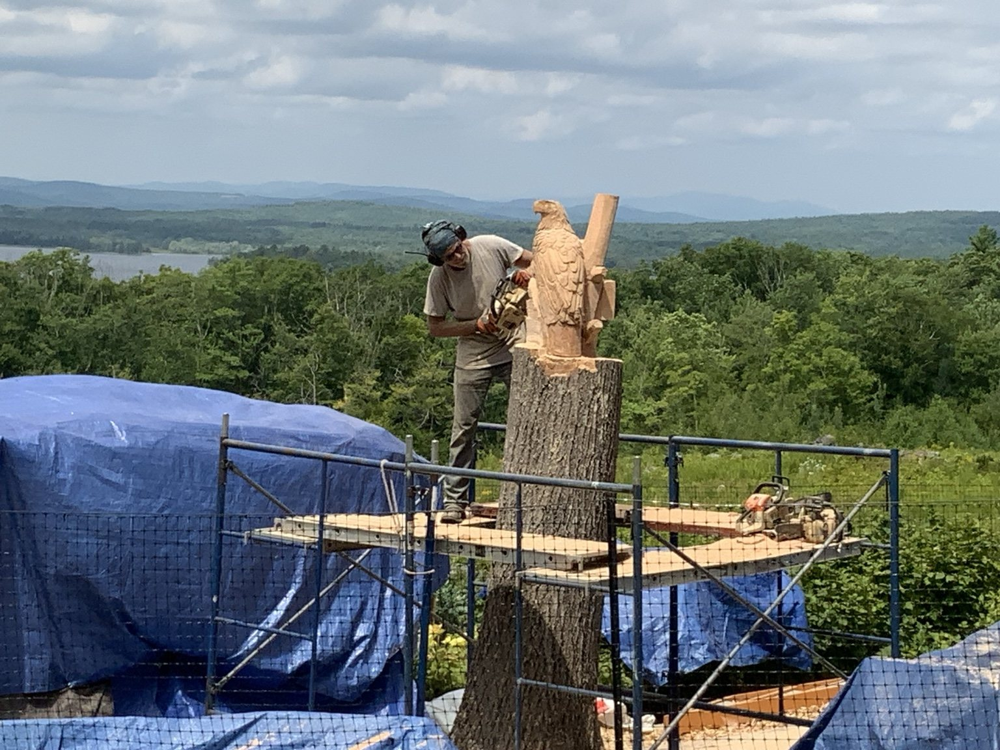

From standing tree to wildlife sculpture
Augusta, Maine chainsaw artist Dan Burns of Burns Bears is transforming the preserved trunk into a wildlife scene led by a bald eagle. This page now loads without JavaScript and preserves the Day 1 and Day 2 progress photographs.
Day 1 · Rough shaping
The trunk was blocked out and the eagle’s major form, head, beak, folded wings, and supporting branches began to appear.





Day 2 · Eagle and wildlife emerge
Feather texture deepened and the smaller animals became recognizable. Additional detail and finishing will follow on later workdays.